7.65625059604644775390 6250000000000007523163 8452626400509999138382 2237233803...
这个无限小数被称为刘维尔常数，是第一个被发现的超越数。
数学家们一直在探索数字王国中的新事物。19世纪70年代，他们发现有一些数游离于数学常规之外。
数学家们喜欢把数按照某个规则或性质划分成不同的类或集合。这种方式便于他们理解数之间的关联，比如哪些性质是所有数的共性，而哪些只是部分数才有的性质。超越数是存在于我们能够想象到的各种类型之外的夹缝中的数。部分超越数，如e和π，是我们所熟知的，但是，我们还未曾见到绝大多数的超越数，亦不可能见到。
如果你认为数字王国是个有序的世界，那么你错了。大多数数字是无序的，它们形成了数字王国中无法被估算的旋涡。
遵循规则
截至目前，我们已经见识了所有最重要的数字分类。从自然数集合开始，加入负数，就得到了全体整数。分数是用整数进行除法运算得到的，如3/4和1/10。整数集合与分数集合并在一起，就是有理数集合。到此为止，一切都按规矩来。
破坏规则
有一些数是无理数（即它们不属于有理数集合），比如
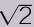
，这个数的发现引发了当时数学界的一场危机，据说还迫使毕达哥拉斯实施了一场谋杀。事实上，这个数，以及其他所有无理数，比如Φ，是不能写成整数之商的形式的。它们亦不能被准确地计算出或写出其小数点后各位的值。我们能做的只是计算其小数点后尽量多的位数上的值。但是，我们仍可以用其他数精准地表达出这些数。方程的根
但是，有理数和部分无理数还是可以构成一个更大的类——代数数，其含义是指这些数能满足某些整系数代数方程，最终消为0，即为整系数代数方程的根。整系数易于处理。比如7满足：7-7=0及-7+7=0。分数，如1/2，稍复杂一点，满足1/2×2-1=0。其实，任何整数，无论多大，任何分数，无论多小，都能找到一个整系数代数方程以之为根。也许你会认为
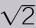
过于复杂，找不到相应的整系数代数方程。不过，让你失望了，其实很简单：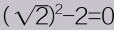
。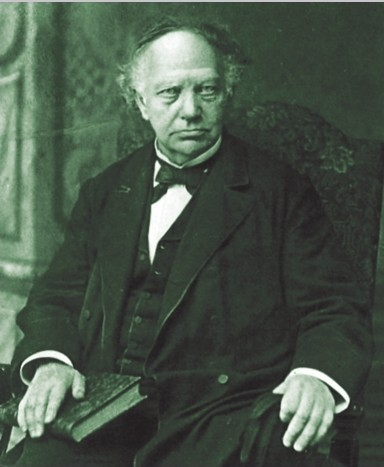
查尔斯·厄米特是一位法国数学家，他于1873年证明了e是超越数。
圆周率Π
人们在2000多年前就已经开始研究数字π，一直致力于寻找其小数点后数码的变化规律，以揭开π的神秘面纱。1882年，这个努力被证明是徒劳的，根本无规律可循。我们可以做的仅仅是计算出其小数点后更多的数码。下面是π小数点后前1000位的数码。
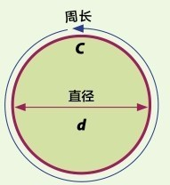
3.1415926535897932384626433832795028841971 6939937510 5820974944 5923078164 0628620899 8628034825 3421170679 8214808651 3282306647 0938446095 5058223172 5359408128 4811174502 8410270193 8521105559 6446229489 5493038196 4428810975 6659334461 2847564823 3786783165 2712019091 4564856692 3460348610 4543266482 1339360726 0249141273 7245870066 0631558817 4881520920 9628292540 9171536436 7892590360 0113305305 4882046652 1384146951 9415116094 3305727036 5759591953 0921861173 8193261179 3105118548 0744623799 6274956735 1885752724 8912279381 8301194912 9833673362 4406566430 8602139494 6395224737 1907021798 6094370277 0539217176 2931767523 8467481846 7669405132 0005681271 4526356082 7785771342 7577896091 7363717872 1468440901 2249534301 4654958537 1050792279 6892589235 4201995611 2129021960 8640344181 5981362977 4771309960 5187072113 4999999837 2978049951 0597317328 1609631859 5024459455 3469083026 4252230825 3344685035 2619311881 7101000313 7838752886 5875332083 8142061717 7669147303 5982534904 2875546873 1159562863 8823537875 9375195778 1857780532 1712268066 1300192787 6611195909 2164201989
运用变量
之前提到我们要做的是构造合适的方程，此时，若用字母替代具体的数字，如常用字母x、y、n或其他，则之前的式子就变成了含有变量的方程：x-x=0，x(y/x)-y=0，
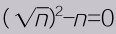
。我们可以找到一个数满足上面的方程。这些方程称为整系数代数方程，满足这些方程的数即为方程的根，亦为之前提及的代数数。数个世纪以来，人们一直认为所有数都该是代数数，只是某些数，数学家们还没有找出合适的方程以之为根。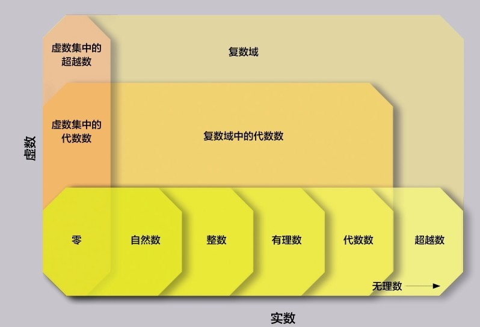
数字王国族谱。大部分数，无论实数集中的，还是复数集中的，都是超越数。
问题趋于复杂
对于更加诡异的数字，如虚数单位i （见第86页：复数），能找到合适的方程吗？虚数单位i等于
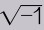
，即-1的平方根，因此，i2=-1。于是，等式两边各加个1就能消为0，即i是整系数代数方程x2+1=0的根，故i为代数数。那么数e呢？（见第138页）也能找到合适的方程吗？自从数e被发现开始，人们就致力于为它寻找合适的方程以证明其为代数数，但是，最终都失败了。1844年，法国数学家约瑟夫·刘维尔尝试证明e不是代数数。当然诚如我们后来知道的，他的努力以失败告终。但是在证明过程中，他构造了一个不能通过整系数代数方程消为0的无理数。这个数，现在被称为刘维尔常数，是迄今发现的第一个超越数。“超越”的意思就是“游离于……之外”，刘维尔常数在当时是数学家们用已有的工具无法处理的。下一个问题是，这个数是不是某一类数的代表？后续的故事
最初，没人知道刘维尔常数是罕见的特例，还是会引发一大类超越数的发现。证明一个数，如e，是超越数，这是非常困难的。1873年，法国数学家查尔斯·厄米特证明了如果e是代数数，则在0和1之间存在另一个整数。显然，这不可能发生，因此，e必为超越数。随着研究的深入，人们发现超越数并不稀少，如有序世界中的珍宝。事实上，恰恰相反，超越数集合比任何其他数的集合都庞大！如果当初的设想为真，人们进而思考，数从何开始，又在哪儿终止？这个问题在当时几乎质疑了整个数学的基石。第三次数学危机的解决，最终证明了超越数的繁多，而主要工具是数学家康托尔的集合论，我们在下一章将谈及。
参见：
▶无穷大，第152页
代数数
代数数不都是有理数——事实上，大部分是无理数。像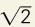
和Φ这些无理数并不能像有理数那样准确写出它在小数点后的每一位，而只能是写到小数点后尽可能多的位数。那么这些无法准确写出的无限不循环小数，又何以能与整数和分数一样成为某个整系数代数方程的根呢？这关键在于它们都能自乘数次后变为整数（关于乘方的内容，见第76页）。比如，虚数单位i是-1的平方根。而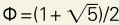
的情况稍复杂些，但它乘2减1后是5的平方根，即它是整系数代数方程(2x-1)2-5=0的根。虽然验证这些无理数是代数数并不是一件易事，但是，任何一个超越数都不可能有这样的代数性质。
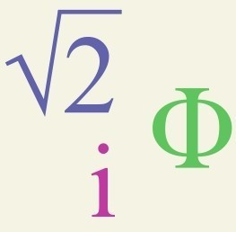